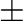

Next: alignment.align3d() align Up: The alignment class: comparison Previous: alignment.consensus() consensus Contents Index
This command compares the structures in the given alignment. It does not make an alignment, but it calculates the RMS and DRMS deviations between atomic positions and distances, and class differences between the mainchain and sidechain dihedral angles. In contrast to the selection.superpose() command, alignment.compare_structures() works with a multiple alignment and it writes more information about the pairwise comparisons.
output selects short ('SHORT') or long ('LONG') form of output to the log file. If it contains word 'RMS' or 'DRMS' it also outputs the RMS or DRMS deviation matrix to file matrix_file. This file can be used with the PHYLIP program or with the environ.dendrogram() or environ.principal_components() commands of MODELLER to calculate a clustering of the structures.
compare_mode selects the form of the positional variability calculated for each position along the sequence:
| 1, | for true RMS deviation over all proteins that have a residue at the current position. This does not make any sense for periodic quantities like dihedral angles. |
| 2, | for the average absolute distance over all pairs of residues that have a residue at the current position. |
| 3, | the same as 2 except that average distance, not its absolute value is used (convenient for comparison of 2 structures to get the  sign of the changes for dihedral angles and distances). |
rms_cutoffs specifies cutoff values for calculation of the position, distance, and dihedral angle RMS deviations for pairwise overall comparisons. If difference between two equivalent points is larger than cutoff it is not included in the RMS sum. The order of cutoffs in this vector is: atomic position, intra-molecular distance, α, Φ, Ψ, ω, χ1, χ2, χ3, χ4, and χ5 (there are 5 dihedrals in a disulfide bridge), where α is the virtual Cα dihedral angle between four consecutive Cα atoms. These cutoffs do not affect positional variability calculations.
fit_atoms string specifies all the atom types (including possibly a generic 'ALL') to be fitted in the least-squares superposition. These atom types are used in the least-squares superposition, and in calculation of the position and distance RMS deviations.
varatom specifies the atom type that is used for getting the average structure and RMS deviation at each alignment position in the ASGL output file 'posdif.asgl'. This ASGL file contains the positional variability of the selected atom type in the family of compared proteins. The ASGL output files can then be used with ASGL scripts 'posdif' and 'dih' to produce POSTSCRIPT plots of the corresponding variabilities at each alignment position. asgl_output has to be True to obtain the ASGL output files.
If fit = True, a least-squares superposition is done before the comparisons; otherwise, the orientation of the molecules in the input atom files is used.
Example: See alignment.malign3d() command.